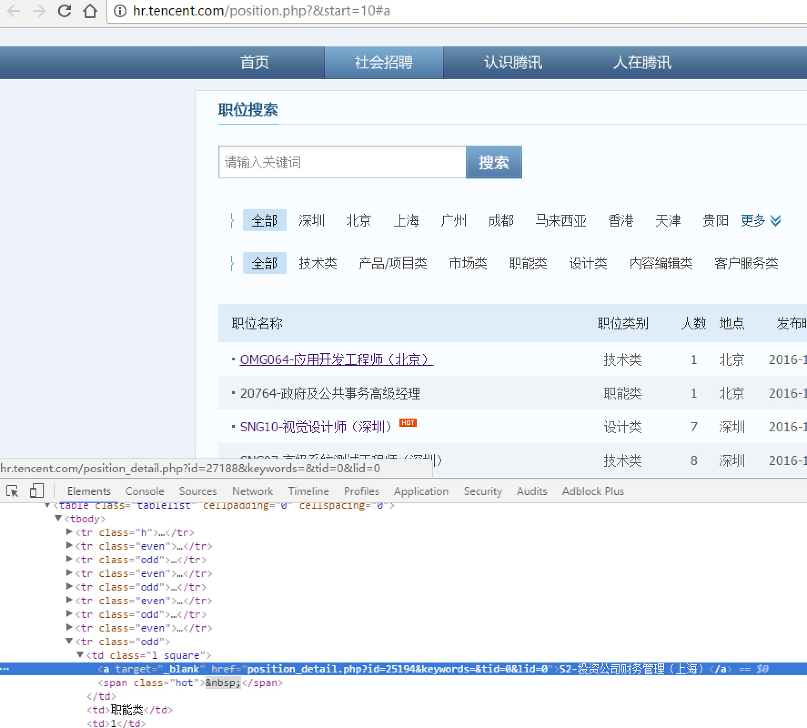
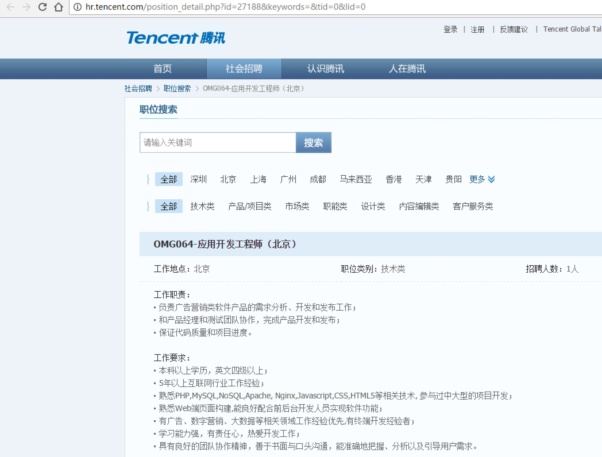

案例：使用BeautifuSoup4的爬虫
我们以腾讯社招页面来做演示：http://hr.tencent.com/position.php?&start=10#a

使用BeautifuSoup4解析器，将招聘网页上的职位名称、职位类别、招聘人数、工作地点、发布时间，以及每个职位详情的点击链接存储出来。

# bs4_tencent.py
from bs4 import BeautifulSoup
import urllib
import json # 使用了json格式存储
def tencent():
url = 'http://hr.tencent.com/'
request = urllib.request.Request(url + 'position.php?&start=10#a')
response =urllib.request.urlopen(request)
resHtml = response.read()
output =open('tencent.json','w')
html = BeautifulSoup(resHtml,'lxml')
# 创建CSS选择器
result = html.select('tr[class="even"]')
result2 = html.select('tr[class="odd"]')
result += result2
items = []
for site in result:
item = {}
name = site.select('td a')[0].get_text()
detailLink = site.select('td a')[0].attrs['href']
catalog = site.select('td')[1].get_text()
recruitNumber = site.select('td')[2].get_text()
workLocation = site.select('td')[3].get_text()
publishTime = site.select('td')[4].get_text()
item['name'] = name
item['detailLink'] = url + detailLink
item['catalog'] = catalog
item['recruitNumber'] = recruitNumber
item['publishTime'] = publishTime
items.append(item)
# 禁用ascii编码，按utf-8编码
line = json.dumps(items,ensure_ascii=False)
output.write(line.encode('utf-8'))
output.close()
if __name__ == "__main__":
tencent()